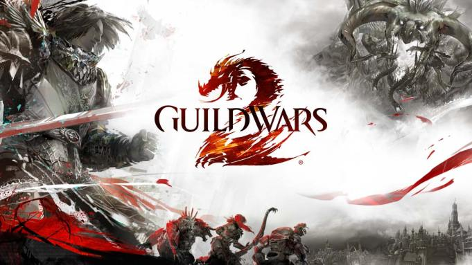
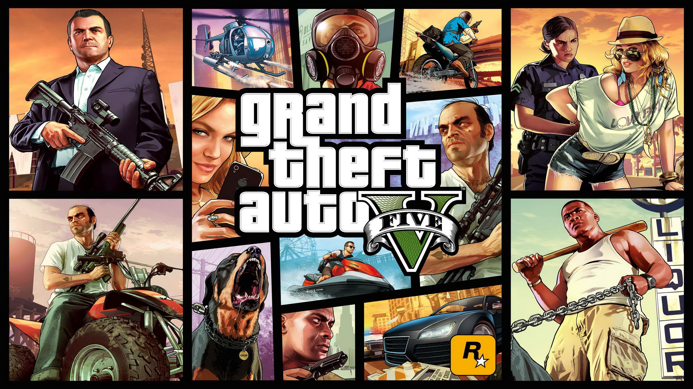
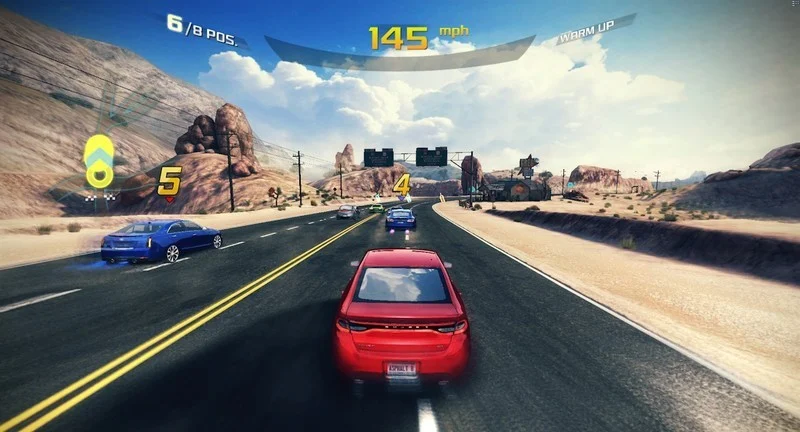
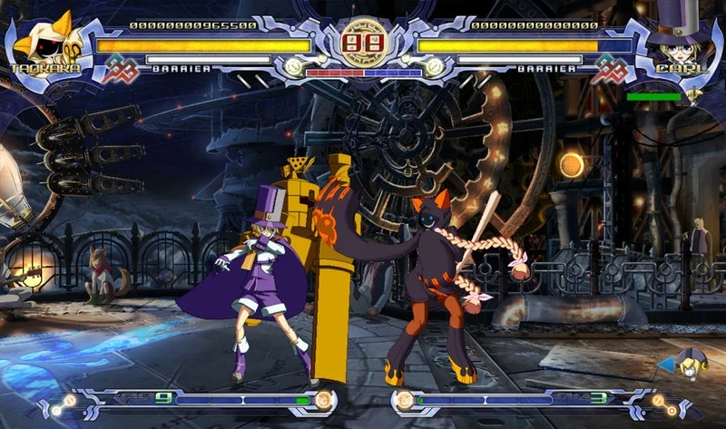
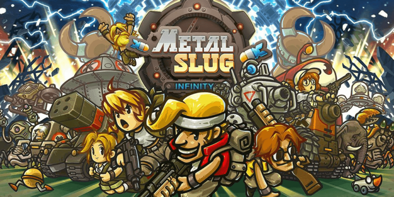
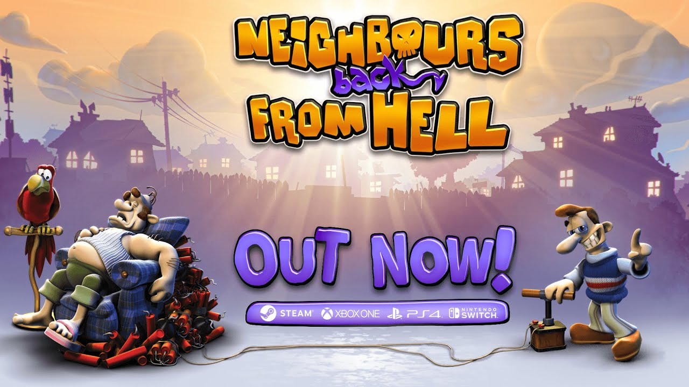

Forza Horizon 4 is a 2018 racing video game developed by Playground Games and published by Microsoft Studios. It was released on 2 October 2018 on Xbox ...
More than 3 Best Arcade Games


Guild Wars 2 is a massively multiplayer online role-playing game developed by ArenaNet and published by NCSoft and ArenaNet. Set in the fantasy world of Tyria, the game follows the re-emergence of Destiny's Edge, a disbanded guild dedicated to fighting the Elder Dragons, a Lovecraftian species that has seized control of Tyria in the time since the original Guild Wars. The game takes place in a persistent world with a story that progresses in instanced environments.[2] Guild Wars 2 claims to be unique in the genre[3] by featuring a storyline that is responsive to player actions,[4] something which is common in single player role-playing games but rarely seen in multiplayer ones. A dynamic event system replaces traditional questing,[5] utilising the ripple effect to allow players to approach quests in different ways as part of a persistent world. Also of note is the combat system, which aims to be more dynamic than its predecessor by promoting synergy between professions and using the environment as a weapon,[6][7] as well as reducing the complexity of the Magic-style skill system of the original game. As a sequel to Guild Wars, Guild Wars 2 features the same lack of subscription fees that distinguished its predecessor from other commercially developed online games of the time, though until August 2015 a purchase was still required to install the game.[8] The game sold over two million copies in its first two weeks.[9][10] By August 2013, the peak player concurrency had reached 460,000.[11] By August 2015, over 5 million copies had been sold, at which point the base game became free-to-play.[12]

Grand Theft Auto V is set circa 2013 in the city of Los Santos and its surrounding areas and tells the stories of three protagonists: Michael De Santa, Franklin ...

Call of Duty: Modern Warfare is a 2019 first-person shooter video game developed by Infinity Ward and published by Activision. · Infinity Ward began working on ...

Asphalt 8: Airborne is a 2013 racing video game, developed by Gameloft Barcelona and published by Gameloft as part of the Asphalt series. It was released on ...

BlazBlue: Calamity Trigger is a fighting game developed by Arc System Works in 2008. The game's name is a portmanteau of "blaze" and "blue," with the "z" ...

Metal Slug is a Japanese run and gun video game series originally created by Nazca Corporation before merging with SNK in 1996 after the completion of the ...

Neighbours from Hell, known in the United States as Neighbors from Hell, is a puzzle strategy game for Nintendo GameCube, Microsoft Windows, Xbox, ...
✖
Dummy text